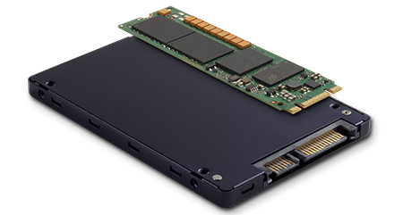

Memorijska Hijerarhija
Imamo više vrsta memorija: RAM (Random Acces Memory), HDD (Hard Disk Drive), SSD (Solid State Drive), USB flash, cache memorija... Odmah ćemo odvojiti radnu memoriju od memorije za pohranu podataka. Radna memorija je zaslužna za obradu podataka uz naš primarni mozak, procesora, u računalu. Veličina, brzina i odaziv su samo neke od karakteristika radne memorije. Dolaze u raznim veličinama, brzinama, odazivima od različitih proizvođača. Sa druge strane, memorija za pohranu samo sprema naše podatke ili se koristi kao main system drive za OS. Također dolazi u različitim brzinama i veličinama, ali i tipu memorije. SSD ima znatno veće brzine od HDD-a, ali su znatno manjih kapaciteta. Cache memorija je nešto posebno na što ne možemo ručno utjecati. Ona je ugrađena u procesor i još par ostalih komponenti i možemo ju samo odabrati pri odabiru procesora pri kupnji. Odlikuju ju najveća brzina u računalu i jako mali odaziv.
